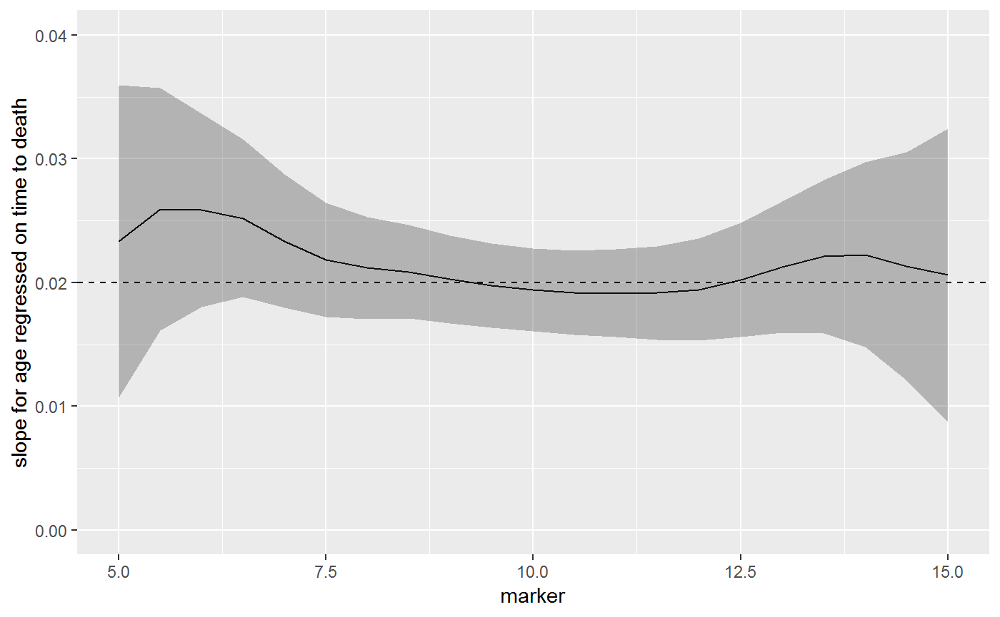

sm_regression.RmdThe sm_regression() function performs kernel weighted regression. After the the model is specified (data = cancertx, method = "coxph", formula = Surv(time) ~ age), an ancillary variable is specified (weighting_var = "marker") and the model is estimated weighted on this variable.
The following examples focus on time-to-event endpoints. The example data set is simulated from a Cox regression model.
\[ h(t) = h_0(t)e^{\textbf{X}\beta} \]
with \(h_0(t) = 1\) and \(\textbf{X}\beta = 0.02 * age - 0.2 * marker\). The independent variables age and marker are independent from one another. The example data set containts the following columns:
time Years from cancer treatment to death
age Age at treatment
marker Marker level at treatment
survt1 True 1 year survival probabilitylibrary(sjosmooth)
library(dplyr)
# loading data from sjosmooth github page
load(url("https://github.com/ddsjoberg/sjosmooth/blob/master/examples/cancertx.rda?raw=true"))
cancertx %>% select(time, age, marker, survt1) %>% head() %>% knitr::kable()| time | age | marker | survt1 |
|---|---|---|---|
| 4.396865 | 12.79050 | 10.052925 | 0.8411829 |
| 1.761713 | 32.70496 | 8.164047 | 0.6867428 |
| 4.401422 | 23.16842 | 8.725925 | 0.7576508 |
| 1.027328 | 30.00945 | 12.923154 | 0.8715716 |
| 1.979813 | 31.51574 | 9.909102 | 0.7719386 |
| 2.009533 | 38.03416 | 7.372298 | 0.6127544 |
The simualted data contains 10,000 observations.
Kernel smoothing can be computationally intense on large data sets. The following code was run to get the example object sm_regression_ex1 and the results saved to GitHub.
library(survival)
library(sjosmooth)
sm_regression_ex1 =
sm_regression(
data = cancertx,
method = "coxph",
formula = Surv(time) ~ age,
weighting_var = "marker",
newdata = dplyr::data_frame(marker = seq(5, 15, 0.5))
)The data in the cancertx data frame was simulated from a Cox regression model with linear predictor.
\[ \textbf{X}\beta = 0.02 * age - 0.2 * marker \]
In the model age and marker level are independent, and therefore, the univariate model the slope coefficient for age remains \(\beta_{age} = 0.02\)
The beta coefficient is the same across all marker levels. In the figure below, the solid black line is the estimates beta coefficient (with 95% CI), and the dashed line is the true value.
library(ggplot2)
library(survival)
# loading example results from sjosmooth github page
load(url("https://github.com/ddsjoberg/sjosmooth/blob/master/examples/sm_regression_ex1.rda?raw=true"))
# plotting regression model coefficient by marker level
plot_data =
sm_regression_ex1 %>%
mutate(
age.coef = purrr::map_dbl(model_obj, ~coef(.x)),
age.ci = purrr::map(model_obj, ~confint(.x) %>% as_data_frame())
) %>%
select(newdata, age.coef, age.ci) %>%
tidyr::unnest(age.ci, newdata)
ggplot(plot_data, aes(x = marker, y = age.coef)) +
geom_line() +
geom_ribbon(aes(ymin = `2.5 %`, ymax = `97.5 %`), alpha = 0.3) +
geom_hline(aes(yintercept = 0.02), linetype = "dashed") +
scale_y_continuous(limits = c(0, 0.04)) +
labs(
y = "slope for age regressed on time to death"
)